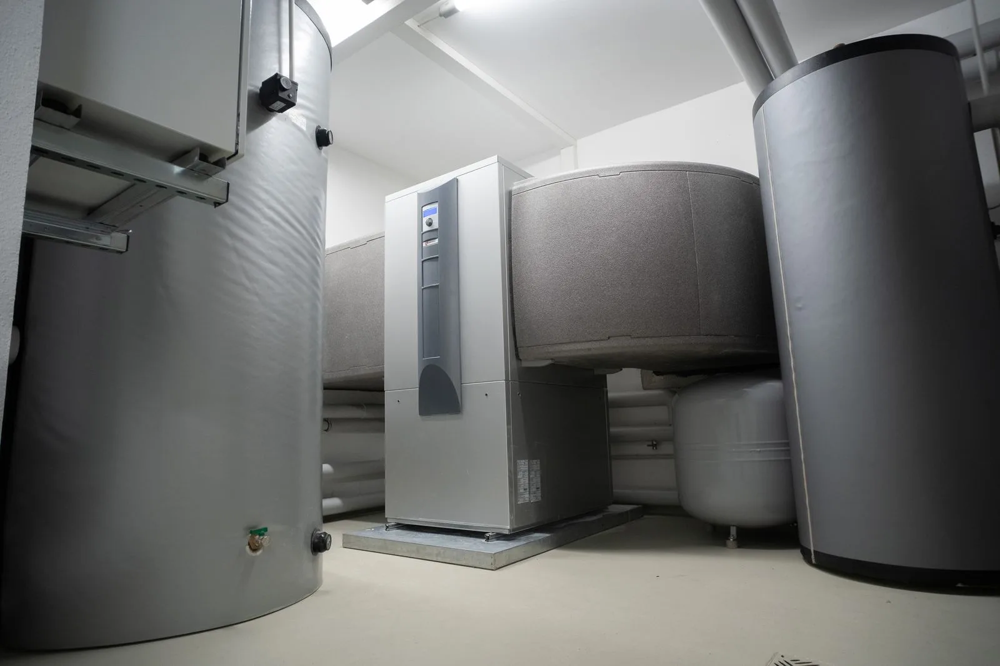

ISI Baltic · Vilnius
Pasikalbėkime apie jūsų projektą
Šildymas, vėdinimas, vandentiekis ar kitas inžinerinis sprendimas. Parašykite, ką planuojate, ir aptarsime jūsų poreikį.

Susisiekime
Aptarkime jūsų objektą
Skambinkite arba paruoškite el. laišką. Pasakykite, kokias sistemas planuojate įrengti.
- Telefonas+370 640 89 999
- El. paštasinfo@isibaltic.lt
- AdresasKaukysos g. 18-304, LT-11342 Vilnius
- Darbo laikas
Dėl apsilankymo laiko paskambinkite.
- Įmonė
- UAB „ISI Baltic“
- Įmonės kodas
- 301566883
- PVM kodas
- LT100003893717
Kaip mus rasti
Kaukysos g. 18-304
LT-11342 Vilnius
Paspaudus mygtuką bus įkeltas OpenStreetMap žemėlapis. Paslauga gaus ryšio duomenis, įskaitant jūsų IP adresą.
Žemėlapis rodo pastatą Kaukysos g. 18. Mūsų adresas: 18-304.